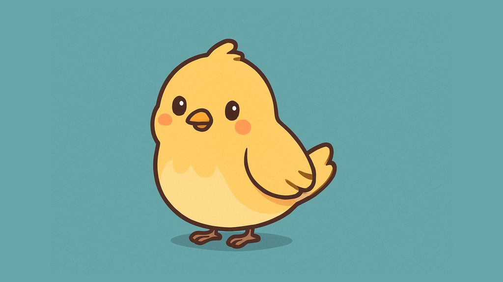
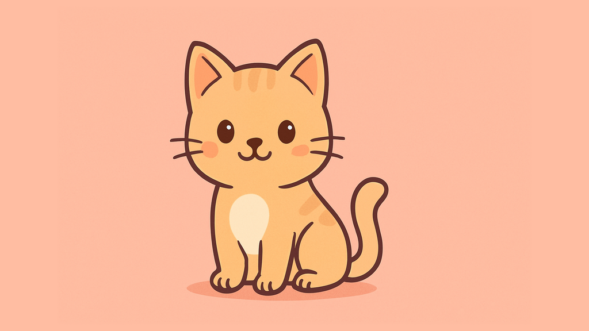
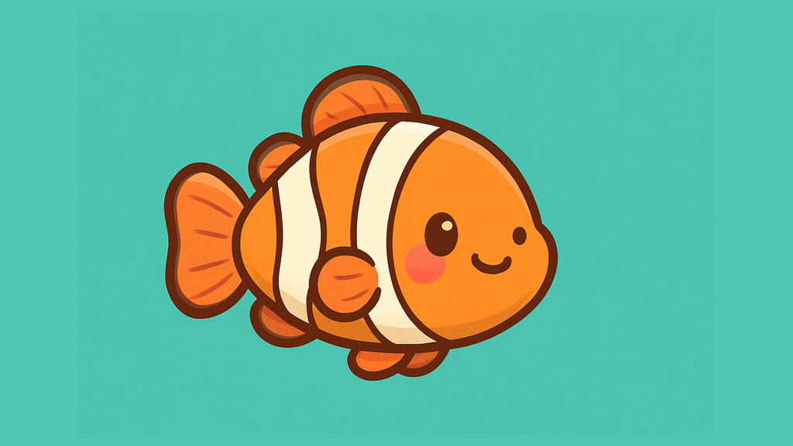

Minyatur – Responsive Aspect Ratio DSL
This example demonstrates the Responsive Aspect Ratio DSL system, allowing the slider's aspect ratio to adapt dynamically based on the screen width.
The Aspect Ratio DSL is a compact syntax that defines ratio rules depending on screen width.
In this example, the definition is:
1:1<800,800<16:9
Which means:
- 1:1 aspect ratio when the screen width is less than 800px
- 16:9 aspect ratio when the screen width is 800px or wider
This DSL string follows the general format:
[min]<[ratio]<[max]or[ratio]<[breakpoint]or[breakpoint]<[ratio]
You can define multiple ranges separated by commas. If no matching rule is found, a default (fixed) ratio is applied automatically.


